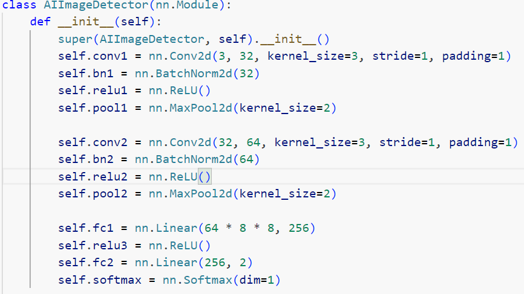
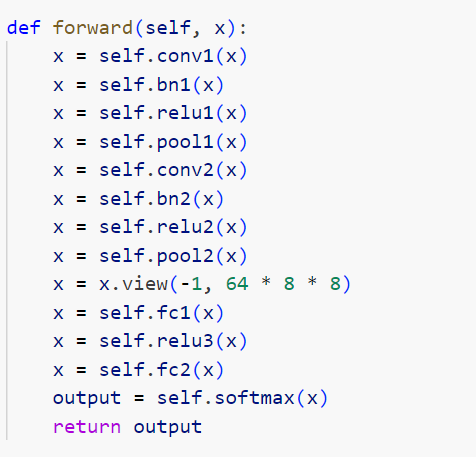
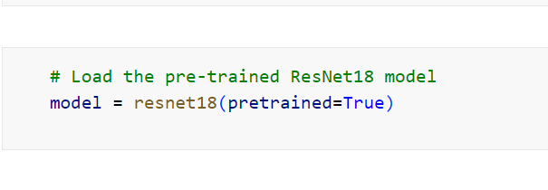
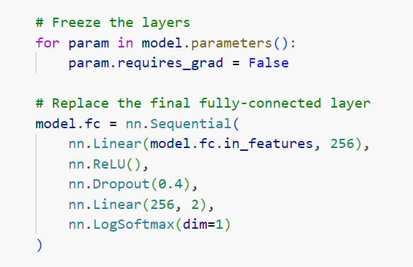
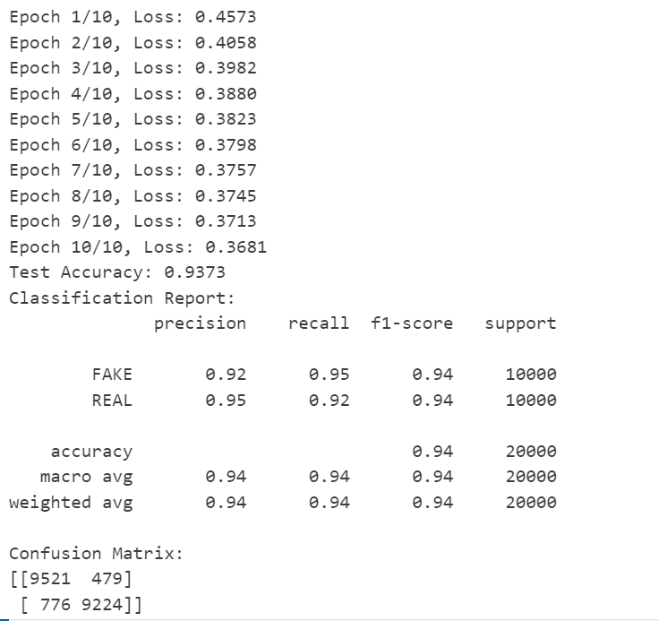
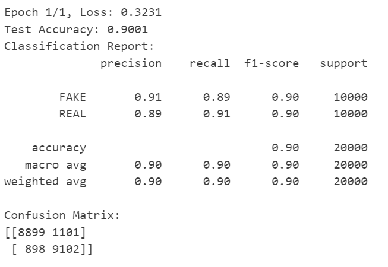

Hello everyone! This page we're diving into the world of image models. More specifically, we'll be comparing two popular architectures - Convolutional Neural Networks (CNN) and ResNet-18.Reference:03-which-image-models-are-best.ipynb 05-linear-model-and-neural-net-from-scratch.ipynb
Before we start comparing, let's take a quick look at what these models are:
Convolutional Neural Networks (CNNs): These are a class of deep learning models designed to process grid-like data, such as images. A CNN has one or more convolutional layers, often followed by pooling layers, fully connected layers, and normalization layers.
ResNet-18: This is a variant of Residual Networks (ResNets), which were introduced to tackle the problem of training very deep neural networks. The "18" refers to the depth of the network - it has 18 layers. ResNets are known for their "shortcut connections" which allow the gradients to be backpropagated to earlier layers more effectively.
ResNet-18, with its deeper architecture and shortcut connections, generally outperforms a standard CNN on large and complex datasets. It's able to learn more complex features and hierarchies. On smaller datasets, however, a simpler CNN might be sufficient and faster to train.
Training a deeper network like ResNet-18 can be more challenging than training a basic CNN, mainly due to the problem of vanishing gradients. However, the shortcut connections in ResNet-18 alleviate this problem by allowing gradients to flow directly through the identity function from later layers to earlier layers.
ResNet-18 requires more computational resources compared to a basic CNN due to its depth. However, the specific computational requirement would also depend on the implementation details, such as the input image size and the number of filters in the convolutional layers.
In Python, you can use the PyTorch library to implement both CNN and ResNet-18. Here's a simplified example for each:
CNN:


ResNet-18:


Here is an example shown the results on these two image model on a same question: Design a deep learning model to classify images into either fake or real. the dataset is from CIFAKE, which contains 60,000 synthetically generated images and 60,000 real images.
CNN:

ResNet-18:

Both CNNs and ResNet-18 have their strengths and can be used effectively for image classification tasks. While CNNs are simpler and faster to train, ResNet-18 can deliver superior performance on complex